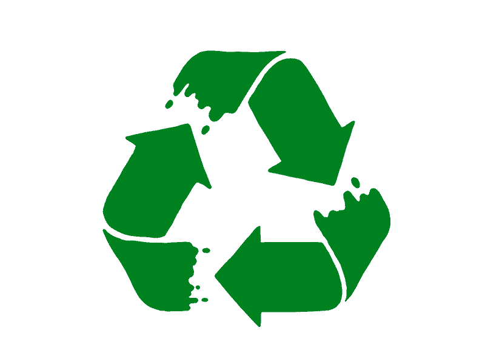

Casa valentina tiene como función
proporcionar la ayuda necesaria a niños con Cáncer
de escasos recursos que habitan fuera de la localidad
y reciben tratamiento en la ciudad de Culiacán,
brindándoles Alojamiento y Alimentación con calor de hogar, Amor
y Empatía.
Impulsar la investigación y capacitación de profesionales
dedicados al diagnóstico y tratamiento de niños con Cáncer.
El plástico PET
fue una invención muy buena para el medio
ambiente, siendo 100% reciclable es casi nula la
pérdida de material, aunque mucho de este
potencial se desperdicia debido a que hay solo
un 60% de tasa de reciclaje por cada que se
vende, puede parecer mucho pero son millones de
ventas al mes, la cantidad aún no es suficiente
para contrarrestar su efecto nocivo.
Solamente nosotros como comunidad estudiantil
podemos hacer que se note la diferencia y el
esfuerzo que hacen las empresas en combatir este
hecho, eso se debe de comunicar esta información
Cada 2 segundos se recicla 1
botella de PET en México
Mientras que en 0.03 segundos se
pierde una botella PET a contaminar algún
ecosistema
¿Cómo?
¿Dónde?
¿Cuándo?
Casa valentina
¿Quién?
El
reciclaje del PET es sencillo, es increíble
pensar que una acción de unos cuantos segundos
ayude tanto a los ecosistemas, simplemente
asegúrate de echar el PET en donde diga
PLÁSTICOS, mejor si específicamente dice
BOTELLAS y asegúrate de aplanar la botella para
aprovechar mejor el espacio del bote.

×
En definitiva poner el granito de arena no es
tarea complicada, como todo solo se mostrará el
efecto del esfuerzo de todos si somos
consistentes en estos hábitos y ayudamos a la
gente que ya nos quiere ayudar
El
reciclaje del PET es sencillo, es increíble
pensar que una acción de unos cuantos segundos
ayude tanto a los ecosistemas, simplemente
asegúrate de echar el PET en donde diga
PLÁSTICOS, mejor si específicamente dice
BOTELLAS y asegúrate de aplanar la botella para
aprovechar mejor el espacio del bote.
×
En definitiva poner el granito de arena no es
tarea complicada, como todo solo se mostrará el
efecto del esfuerzo de todos si somos
consistentes en estos hábitos y ayudamos a la
gente que ya nos quiere ayudar
El
reciclaje del PET es sencillo, es increíble
pensar que una acción de unos cuantos segundos
ayude tanto a los ecosistemas, simplemente
asegúrate de echar el PET en donde diga
PLÁSTICOS, mejor si específicamente dice
BOTELLAS y asegúrate de aplanar la botella para
aprovechar mejor el espacio del bote.
×
En definitiva poner el granito de arena no es
tarea complicada, como todo solo se mostrará el
efecto del esfuerzo de todos si somos
consistentes en estos hábitos y ayudamos a la
gente que ya nos quiere ayudar
Casa valentina es una
organización
fundada en el año 2007 y desde entonces han atendido a más
de 820 niños
con este terrible padecimiento. Este hogar también da
servicio de alimentación, hospedaje
y trasporte a pacientes de todo el Estado de Sinaloa,
Sonora, Chihuahua,
Baja California sur y Durango.
×
El
reciclaje del PET es sencillo, es increíble
pensar que una acción de unos cuantos segundos
ayude tanto a los ecosistemas, simplemente
asegúrate de echar el PET en donde diga
PLÁSTICOS, mejor si específicamente dice
BOTELLAS y asegúrate de aplanar la botella para
aprovechar mejor el espacio del bote.
×
En definitiva poner el granito de arena no es
tarea complicada, como todo solo se mostrará el
efecto del esfuerzo de todos si somos
consistentes en estos hábitos y ayudamos a la
gente que ya nos quiere ayudar

 Contact
Contact